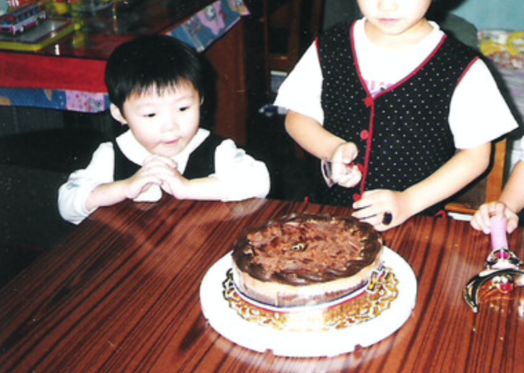
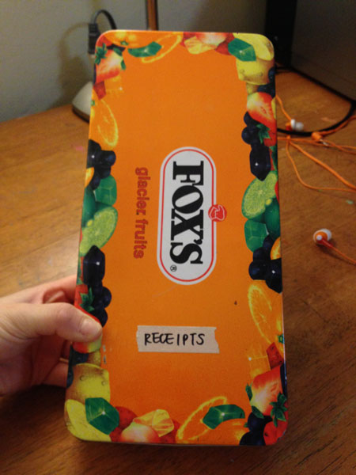

ruth lin:
sunflower seeds make me feel nostalgic (this is the first time I’ve had it here at RISD. in the past we only had it at home, usually after dinner)
I miss the oranges at home
we usually had a lot...
ok no oranges but I look hungry here...
also tradition is making lots of century egg porridge (although here it’s usually late at night rather than in the morning over the weekend)
at home — baking cinnamon pecans
here to read more stories from ruth
kaitlyn nee:
eating tang yuan and mooncakes
And dim sum
my special japanese soy sauce I bring to school my mom use it to cook since I was young
here to read more stories from kaitlyn
sarah im:
Smells:
crisp air of California (there’s a definite smell), chinese popcorn chicken ( I would always go to a milk tea place after school and they were constantly making popcorn chicken), fried dumplings
ingrid nelson:
1) Today I smelled food that reminded me of Haitian food, I wish my mom was here to take caere of me.
2) Every time I talk to my mom on the fone. Makes me feel like I want to go home. Except when she is telling me that I want to go to church.
I hate going to church and its a point of argument
Traditions:
Eating a soup "joumou" pumpin soup 1st of january (independance day).
I Eating fish on passover friday
lol Thas more like i feel guilty if i eat meat
I feel guilty because on passover friday or week you are not supposed to eat meat
taryn oshiro-wachi:
old snacks ( like gushers or fudge bars), music (hawaiian mostly, keeali’i rachel) that sometimes reminds me of how when I was younger,
laura lin:
anything that comes in a tin container (especially candy tins, cookie tins)
btw this is the fruit candy tin i was talking about
here to read more stories from laura